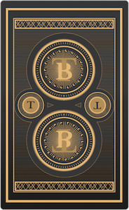
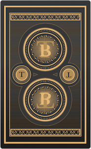

Introduction
This project is an app for users to get a Tarot Card Reading. I updated the aesthetic that chacterizes Tarot. I also wanted to practice directing a user with as little text quidance as possible.

Conception
I spent time thinking about what Tarot is and what it's like getting a reading from another person. I wanted the site to retain some of the mystery and intution that a reading requires, so I kept instruction to a minimum and tried to design simple call to action buttons that would move a viewer through the site.
The design of the site artful and minimal. I avoided the usual witchy vibe that comes with Tarot. I want the site to be appreciated by people who may not know much about Tarot, so the design is tasteful. The logo and drawings are clean. The call to action buttons are unique, yet simple. The color pallet is fairly neutral, so that there is no distraction from the epic images on the cards.
I made all the content for this app: the logo, icons, and card images, and card backs.
Process
I played around with the layout and organization of the app many times. It was a challenge helping viewers navigate the site without instructions. There is a form field that a viewer can type a question or concern. Upon submitting, the screen scrolls down for them. I kept the call to action buttons instructive.
Solutions
To help navigate the site there are a few call to action buttons that iniate animations that scroll through the sight and present the next step or more information to the viewer.
I designed all of the content for the site! I cards, logo, buttins anf icons were made in sketch.
 
